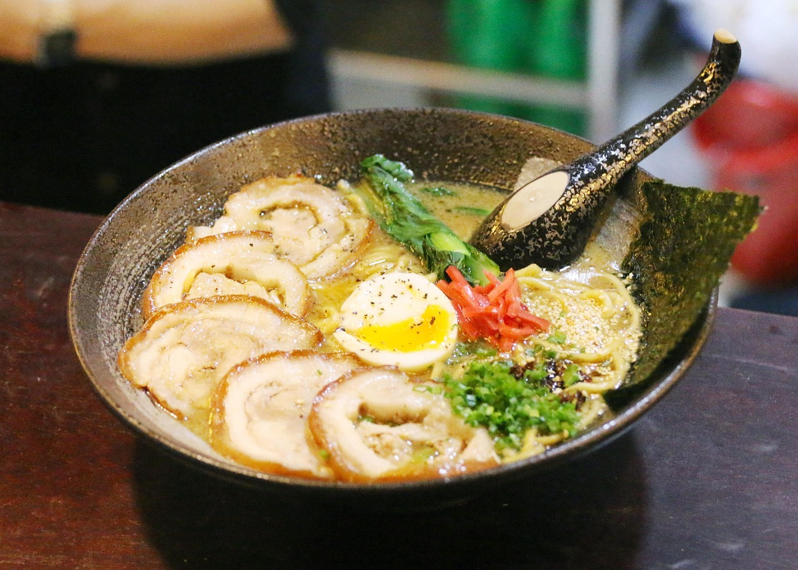

Ramen
Ramen is one of Japan’s most beloved and iconic dishes.
It consists of Chinese-style wheat noodles served in a savory broth, often flavored with soy sauce, miso, or salt.
Toppings commonly include sliced pork (chashu), green onions, boiled eggs, nori (seaweed), and bamboo shoots.
Each region in Japan has its own unique style of ramen—for example, Tonkotsu (pork bone broth) from Fukuoka or miso ramen from Hokkaido.
Ramen is not just food in Japan—it’s a cultural experience enjoyed in restaurants, ramen bars, and even convenience stores across the country.